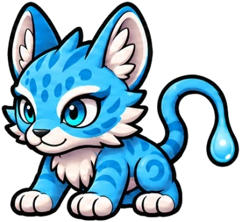
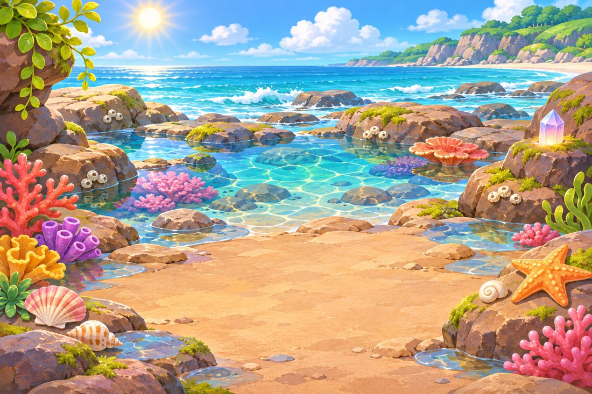

 Water
Water Psychic
PsychicTap a stage to read its story.
Azukit is a small blue-furred kitten dusted with darker blue spots and carrying a thin water-dripping tail that leaves wet paw-sized puddles wherever it wanders. Its wide eyes hold a distant look - not lost, but listening to something just below hearing. Azukit paws at the tide pools of Coral Bay for hours, not hunting but reading, as though each ripple carries a message. The guardians' diaries describe a small blue kit that sat at the water's edge and whispered the next day's weather to anyone who leaned in close enough.
Field note: Azukit whispers the next day's wave height into the ears of sleeping tide-pool crabs - the crabs are always right.

Coral Bay. Azukit got separated from its pack by the tide. Help Azukit get back to them!
Watched over by the Guardian Axon.
Personality: Loyal
Signature move: Splash Pounce
What helps a cat feel things?
Share a Bond Food that matches its types to become friends. Azukit loves:
A Bond Food is not a trick. It joins your spirit with the Kimuro's spirit, and only when it chooses you.
Mazes, puzzles, cards and a Bond Mark medal in the printable Coral Bay adventure.
Print the adventure